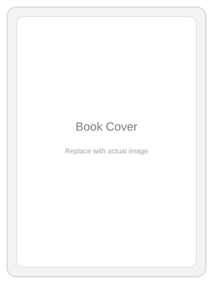

내일 전환
전환의 순간을 준비하는 변화 전략
불확실한 시대에 필요한 것은 변화에 대한 민감성과 혁신적 접근이라는 메시지를 전합니다. 코닥과 후지필름 사례를 통해 전환의 선택이 생존과 성장을 가르는 순간임을 보여주며, 개인에게도 전환을 준비하고 기회를 주도적으로 활용하는 태도를 강조합니다.
코칭플러스의 도서를 소개합니다.
불확실한 시대에 필요한 것은 변화에 대한 민감성과 혁신적 접근이라는 메시지를 전합니다. 코닥과 후지필름 사례를 통해 전환의 선택이 생존과 성장을 가르는 순간임을 보여주며, 개인에게도 전환을 준비하고 기회를 주도적으로 활용하는 태도를 강조합니다.

현장에서 바로 적용할 수 있는 리더십 코칭의 핵심을 정리한 도서입니다. 조직 내 의사결정과 소통 흐름을 구조적으로 정리합니다.
협업 규칙과 팀워크 기준을 정리하는 실무 중심의 코칭 가이드입니다. 팀 내 공감과 실행을 높이는 대화 구조를 담았습니다.
짧은 워크숍을 위한 실습 과제를 묶은 워크북 형태의 도서입니다. 코칭 질문과 적용 과제를 체계적으로 제시합니다.
조직 내 실행력을 높이기 위한 기준과 흐름을 정리한 실무형 가이드입니다. 문제 정의부터 적용까지의 과정을 단계별로 제시합니다.
팀 코칭을 빠르게 적용할 수 있도록 정리한 플레이북입니다. 팀의 대화와 실행을 연결하는 실전 포인트를 정리했습니다.